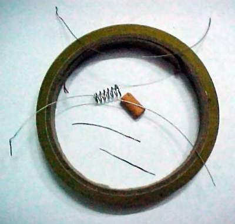
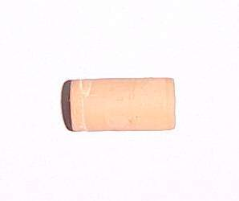
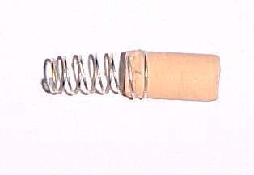
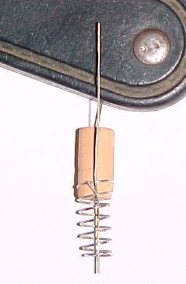
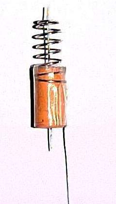
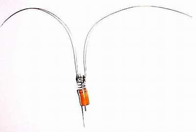

Touch sensors provide a simple way for robots to detect collisions or trigger actions when they come into contact with an object. The concept is straightforward: a normally open circuit is closed when the sensor assembly compresses against a surface.
-
Step 1 — Parts
This build uses a small spring, a pencil eraser, tape, and a few short lengths of wire. These form both the mechanical structure and the electrical contacts of the sensor.
-
Step 2 — Prepare the eraser
Remove the eraser from the back of a pencil. It will serve as the compressible core inside the spring, helping the assembly return to its original position after contact.
-
Step 3 — Insert the eraser into the spring
Press the eraser firmly into one end of the spring so it sits snugly. This creates a cushioned, responsive contact element that can compress smoothly during impact.
-
Step 4 — First electrical connection
Solder a wire to the spring to create one terminal. Make a small hole through the center of the eraser and pass a second wire through it so that it extends from both ends. This second wire forms the other terminal in the circuit.
-
Step 5 — Alignment and taping
Use tape to secure the spring, eraser, and wires so the assembly stays aligned and mechanically stable. The structure should remain firm while still allowing the spring to compress freely.
-
Step 6 — Extend the feeler wires

Solder longer wires to the spring on the opposite side. These act as the feelers that touch obstacles. When the feelers meet a surface, they push the spring and eraser inward, closing the circuit.
-
Step 7 — Completion
The finished sensor has two rear wires that act as the output terminals. When the feelers press into an object and the spring compresses, the circuit closes. If simultaneous contact between both feelers and the same surface is a concern, consider using a single-feeler design or positioning multiple sensors so the feelers don’t overlap.